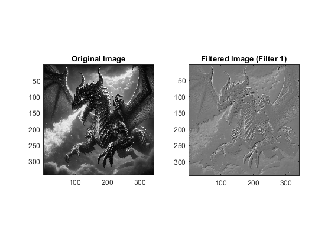
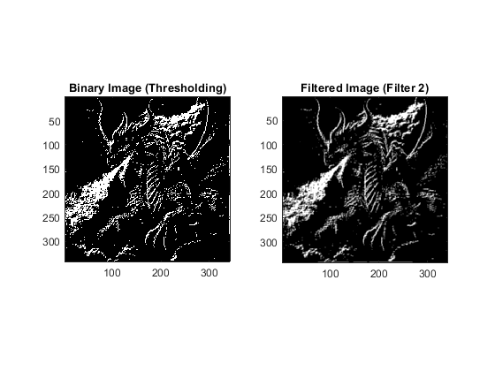

Contents
- QUESTION 1 COMMENTING
- QUESTION 2 AUDIO (DO NOT CHANGE)
- 2(a) CREATE FUNCTION (SEE END OF FILE)
- 2(b) APPLY ECHO
- 2(c) ANSWER QUESTION
- 2(d) CREATE FUNCTION (SEE END OF FILE)
- 2(e) APPLY RING MODULATOR
- 2(f) ANSWER QUESTION
- 2(g) TEST LINEARITY AND ANSWER QUESTION
- 2(h) TEST TIME-INVARIANCE AND ANSWER QUESTION
- QUESTION 3 Image Set-up (DO NOT CHANGE!)
- 3(a) APPLY FILTER 1
- 3(b) ANSWER QUESTION
- 3(c) APPLY THRESHOLDING
- 3(d) APPLY FILTER 2
- 3(e) ANSWER QUESTION
- ALL FUNCTIONS SUPPORTING THIS CODE %%
QUESTION 1 COMMENTING
% DO NOT REMOVE THE LINE BELOW % MAKE SURE 'eel3135_lab03_comment.m' IS IN SAME DIRECTORY AS THIS FILE clear; close all; type('eel3135_lab04_comment.m')
% Convolution can be seen as the mathematical expression of how one signal
% can modify the other, you will need to comment the answers to the
% questions on the following lines of code to demonstrate the basics of
% convolution. Also answer the question at the end in order to understand
% the effects that convolution may have on the original signal.
%% ONE-DIMENSIONAL CONVOLUTION
% INPUT SIGNAL
xx = [1 1 -1 -1 1 1 -1 -1 1 1 1 1 -1 -1 -1 -1];
% <-- Answer: What is the length of xx?
% 17
% FILTER COEFFICIENTS / IMPULSE RESPONSE
bk = [1/4 1/4 1/4 1/4];
% <-- Answer: What is the length of bk?
% 4
% FILTER OUTPUT
yy = conv(bk, xx);
% <-- Answer: What is the length of yy?
% 20 = (17 + 4 -1) = (xx length + bk length - 1)
% PERFORM FILTERING IN ALTERNATIVE WAY
zz = 1/4*shift(xx, 0) + 1/4*shift(xx, 1) + 1/4*shift(xx, 2) + 1/4*shift(xx, 3);
% <-- Answer: What is the length of zz?
% xx length = zz length = 17
% --> ANSWER BELOW: Explain why yy and zz are different lengths. <--
% The output of the convolution (yy) is longer than the input signal (xx)
% because convolution overlaps the filter (bk) with the input signal (xx)
% at each position to introduce more sam[les at the edges. The alternative
% filtering method (zz) makes a weighted sum of shifted versions of the
% input signal (xx) that doesn't add other samples, so the output (zz) is
% the same length of the input (xx)
% PLOT
figure(1)
subplot(411)
stem(xx); axis([0 20 -1 1])
ylabel('Amplitude')
subplot(412)
stem(bk); axis([0 20 -1 1])
ylabel('Amplitude')
subplot(413)
stem(yy); axis([0 20 -1 1])
ylabel('Amplitude')
subplot(414)
stem(zz); axis([0 20 -1 1])
ylabel('Amplitude')
xlabel('Samples')
%% TWO-DIMENSIONAL CONVOLUTION
% INPUT SIGNAL
x2 = [ones(15) -1*ones(15)]*255;
% FILTER COEFFICIENTS
b2 = (1/8)*[0 1 1 1 1 0; 0 1 1 1 1 0];
b3 = [1 1 1 -1 -1 -1; 1 1 1 -1 -1 -1];
% OUTPUT
y2 = conv2(x2,b2);
y3 = conv2(x2,b3);
% NORMALIZATION
y3 = y3 - min(y3(:));
y3 = y3./max(y3(:))*255;
% --> ANSWER BELOW: How does this normalization change the range of values in y3?
% Normalization rescales the value in y3 to fit in the range 0-255, first
% by subtracting the minimum value of the shift the entire range up, then
% by divifing the maximum value to scale it down, and finally multiplying
% by 255 to stretch the range in the interval 0-255.
% --> ANSWER BELOW: Why does filter b2 affect the image as it does?
% What are possible applications of filter b2? <--
% Filter b2 averages the pixel values to those close by which creates a
% smoothing filter affect.
% The possible applications of filter b2 is that it can reduce noise and
% blur images. S, it can ve used to include pre-processing images for edge
% detection or reducing high frequency noise.
% --> ANSWER BELOW: Why does filter b3 affect the image as it does?
% What are possible applications of filter b3? <--
% Filter b3 subtracts the average surrounding pixels from the center pixel
% which creates a high-pass filter that enhances edges.
% The b3 filter essentially highlights transitions and edges in an image,
% so it can be used to detect edges and sharpen images.
% SAVE IMAGES
imwrite(uint8(y2), 'comment_image1.png')
imwrite(uint8(y3), 'comment_image2.png')
% PLOT THE FIRST FILTER RESULTS
figure(2)
subplot(231)
imagesc(x2)
xlabel('x'); ylabel('y'); zlabel('z');
title('x2')
axis equal; axis tight; colormap('gray');
subplot(232)
imagesc(b2)
xlabel('x'); ylabel('y'); zlabel('z');
title('b2')
axis equal; axis tight; colormap('gray');
subplot(233)
imagesc(y2)
xlabel('x'); ylabel('y'); zlabel('z');
title('y2')
axis equal; axis tight; colormap('gray');
% PLOT THE SECOND FILTER RESULTS
subplot(234)
imagesc(x2)
xlabel('x'); ylabel('y'); zlabel('z');
title('x2')
axis equal; axis tight; colormap('gray');
subplot(235)
imagesc(b3)
xlabel('x'); ylabel('y'); zlabel('z');
title('b3')
axis equal; axis tight; colormap('gray');
subplot(236)
imagesc(y3)
xlabel('x'); ylabel('y'); zlabel('z');
title('y3')
axis equal; axis tight; colormap('gray');
function xs = shift(x, s)
%SHIFT ===> This function shifts the input signal x by s samples. <===
% If s is positive, the signal is delayed; if s is negative, it is advanced.
% ====> Initialize output with an array of zeros that is the same length as the input <====
xs = zeros(length(x), 1);
for n = 1:length(x)
% ====> Checks if the shifted index is in the same bounds as input signal <====
if n-s > 0 && n-s <= length(x)
% ====> Assigns value from input signal to shifted output if they overlap <====
xs(n) = x(n-s);
end
end
end
QUESTION 2 AUDIO (DO NOT CHANGE)
MAKE SURE 'loubarlow.wav' is in the same directory! You can find it here: https://freemusicarchive.org/music/Lou_Barlow/
[x, fs] = audioread('loubarlow.wav');
2(a) CREATE FUNCTION (SEE END OF FILE)
2(b) APPLY ECHO
s = 20000; % Delay in samples A = 0.5; % Echo amplitude xr = echo(x, s, A); % Applies echo to the input signal) % Normalize xrn = xr / max(abs(xr)); audiowrite('b_echo.wav', xrn, fs); % Saves the output audio
2(c) ANSWER QUESTION
If the sampling frequency is 44100 samples per second, delaying by 200000 samples, the delay on the signal in seconds is delay/sampling frequency = 20000/44100 = 0.4535 seconds.
2(d) CREATE FUNCTION (SEE END OF FILE)
2(e) APPLY RING MODULATOR
A = 1; % Amplitude m1 = 1/1250; % Modulation frequency 1 m2 = 1/250; % Modulation frequency 2 xt1 = ring_modulator(x, m1, A); % Apply ring modulator for m1 xt1n = xt1 / max(abs(xt1)); xt2 = ring_modulator(x, m2, A); % Apply ring modulator for m2 xt2n = xt2 / max(abs(xt2)); audiowrite('e_modulator1.wav', xt1n, fs); % Save output for m1 audiowrite('e_modulator2.wav', xt2n, fs); % Save output for m2
2(f) ANSWER QUESTION
Ring modulation creates new frequencies that are the sum and difference of the original frequencies and modulation frequency that can create a metallic or bell-like sound.
2(g) TEST LINEARITY AND ANSWER QUESTION
a = 10; % Test scalar xr_original = 10 * echo(x, 20000, 0.5); % Scale the original echo output xr_original_r = 10 * ring_modulator(x, 1/1250, 1); % Scales the original ring modular output % % Normalize xr_original % xr_original = xr_original / max(abs(xr_original)); xr_test_echo = echo(10 * x, 20000, 0.5); % Test echo with scaled input % Compare xr_test_echo and xr_original to check linearity if xr_test_echo == xr_original disp('The system is linear: xr_test_echo is equal to xr_original.'); else disp('The system is not linear: xr_test_echo is not equal to xr_original.'); % Maximum difference between outputs max_difference = max(abs(xr_test_echo - xr_original)); disp(['Maximum difference between outputs: ', num2str(max_difference)]); end xr_test_modulator = ring_modulator(10 * x, 1/1250, 1); % Test ring modularity with the scaled input % Compare xr_test_modulator and xr_original to check linearity if xr_test_modulator == xr_original_r disp('The system is linear: xr_test_modulator is equal to xr_original_r.'); else disp('The system is not linear: xr_test_modulator is not equal to xr_original_r.'); % Maximum difference between outputs max_difference = max(abs(xr_test_modulator - xr_original_r)); disp(['Maximum difference between outputs: ', num2str(max_difference)]); end % The echo system is linear beacause the ouput from applying the echo % scaled input is equal to the scaled output of the original input, which % satisfies the homogeneity of the linearity property. However, when I % solve it myself, it is linear. % % The ring modulation system is non linear beccause when comparing the % ring modulator to the scaled input with the scaled output of the original % input, they are not equal, whcih indicates the ring modulation does not % satisfied the homogeneity of the linearity property.
The system is linear: xr_test_echo is equal to xr_original. The system is not linear: xr_test_modulator is not equal to xr_original_r. Maximum difference between outputs: 1.7764e-15
2(h) TEST TIME-INVARIANCE AND ANSWER QUESTION
N = 4000; % Shift amount xs = shift(x, N); % Shift input % xr_original_echo_shifted = echo(xs, s, A); % Shift the original output xr = echo(x, 20000, 0.5); xr_original_echo_shifted = shift(xr, N); % Takes the original echo(x, s, A) and shifts % xr_mod_original_shifted = shift(xr, N); % Shift the original output xt1 = ring_modulator(x, 1/1250, 1); xr_mod_original_shifted = shift(xt1, N); % Takes the original ring_modulator(x, m, A) and shifts xr_shifted_echo = echo(xs, 20000, 0.5); % Apply echo to shifted input % Compare xr_shifted with shifted xr to check time invariance if isequal(xr_shifted_echo, xr_original_echo_shifted) disp('The echo system is time-invariant: xr_shifted_echo is equal to xr_original_echo_shifted.'); else disp('The echo system is time-varying: xr_shifted_echo is not equal to xr_original_echo_shifted.'); % Maximum difference between outputs max_difference = max(abs(xr_shifted_echo - xr_original_echo_shifted)); disp(['Maximum difference between outputs: ', num2str(max_difference)]); end xr_mod_shifted = ring_modulator(xs, 1/1250, 1); % Applies ring_modulator for the shifted input % Compare xr_shifted with shifted xr to check time invariance if isequal(xr_mod_shifted, xr_mod_original_shifted) disp('The ring modulation system is time-invariant: xr_mod_shifted is equal to xr_mod_original_shifted.'); else disp('The ring modulation system is time-varying: xr_mod_shifted is not equal to xr_mod_original_shifted.'); % Maximum difference between outputs max_difference = max(abs(xr_mod_shifted - xr_mod_original_shifted)); disp(['Maximum difference between outputs: ', num2str(max_difference)]); end % The echo system is time invaariant since the output form the echo to to the % shifted input is euqal to the shifted output of the original input, % which indicates the system changes over time is what the result states, % Additionally, working it out myself it is time invariant since there is no % n on the outside so shifting the original echo output and using the new % shifted x value as an echo input should yield the same results. % % The ring modulation system is time varying since the output from the % ring modulator to the shifted inpput is differnt from the shifted ouput % of the original input, so not time in-variant.
The echo system is time-invariant: xr_shifted_echo is equal to xr_original_echo_shifted. The ring modulation system is time-varying: xr_mod_shifted is not equal to xr_mod_original_shifted. Maximum difference between outputs: 1.1571
QUESTION 3 Image Set-up (DO NOT CHANGE!)
Make sure 'ai_dragon_small.png' is in the same directory!
img = imread('ai_dragon_small.png'); % Load image img = double(img); % Convert image from integers to doubles
3(a) APPLY FILTER 1
Define the filter kernel
w = [-2 -1 0; -1 1 1; 0 1 2]; % Apply the filter using 2D convolution f1 = conv2(img, w, 'same'); % Use 'same' to keep the output size the same as the input % Normalize the image f1 = (f1 - min(f1(:))) / (max(f1(:)) - min(f1(:))) * 255; % Use subplot to display the original and filtered images figure; subplot(1, 2, 1); % 1 row, 2 columns, 1st subplot imagesc(img); % Display original image title('Original Image'); axis equal; axis tight; colormap('gray'); % Set axis properties subplot(1, 2, 2); % 1 row, 2 columns, 2nd subplot imagesc(f1); % Display filtered image title('Filtered Image (Filter 1)'); axis equal; axis tight; colormap('gray'); % Set axis properties
3(b) ANSWER QUESTION
The filter is designed to emphasize changes in intensity by extracting edges from the high-pass nature of the kernel.
The negative values on the left and bottom sides of the kernel indicate that it will subtract the average of the surrounding pixels from the center pixel, while the positive values on the right and top sides will add to the center pixel. As a result, this filter emphasizes transitions in pixel intensity, effectively extracting edges from the image.
The filter can be classified as a high-pass filter, which is commonly used in image processing for edge detection and sharpening.
3(c) APPLY THRESHOLDING
Perform thresholding operation on f1[u, v]
f2 = (f1 > 140); % Create a binary image where pixels greater than 140 are set to 1, others to 0
3(d) APPLY FILTER 2
Define the new filter impulse response (kernel)
w2 = (1/9) * ones(3, 3); % A 3x3 averaging filter % Apply the new filter to f2 f3 = conv2(f2, w2, 'same'); % Use 'same' to keep the output size the same as the input % Use subplot to display the binary image and the filtered image figure; subplot(1, 2, 1); % 1 row, 2 columns, 1st subplot imagesc(f2); % Display binary image title('Binary Image (Thresholding)'); axis equal; axis tight; colormap('gray'); % Set axis properties subplot(1, 2, 2); % 1 row, 2 columns, 2nd subplot imagesc(f3); % Display filtered image title('Filtered Image (Filter 2)'); axis equal; axis tight; colormap('gray'); % Set axis properties
3(e) ANSWER QUESTION
The second filter applied in section 3(d) is an averaging filter, which is designed to blur the image. The kernel is: w2 = (1/9) * ones(3, 3)
This filter takes the average of the surrounding pixels in a 3x3 neighborhood, effectively smoothing the image and reducing noise. The averaging filter is commonly used in image processing for noise reduction and to create a softening effect on images.
ALL FUNCTIONS SUPPORTING THIS CODE %%
function y = echo(x, s, A) %ECHO ===> Creates an echo affect in input signal x. That is calcluated as % y[n] = x[n] + (A * x[n-s]), where A is the echo amplitude and s is the delay in samples <=== % x_s = shift(x, s); % % y = x + (A * x_s); % Apply echo effect using the shift function % Initialize the output signal with zeros y = zeros(length(x), 1); % Apply the echo effect for n = 1:length(x) y(n) = x(n); % Original signal if n - s > 0 && n - s <= length(x) % Check for valid index y(n) = y(n) + (A * x(n - s)); % Add the echo end end % Normalize the output to the range [-1, 1] % y = y / max(abs(y)); % Scale the output by its maximum absolute value end function y = ring_modulator(x, m, A) %RING_MODULATOR ===> Applies ring modulation to input signal x. <=== % Ouput is calculated as y[n] = A * x[n] * cos( 2 * pi * m * n) where A is % amplitude and m is modulation frequency n = (0:length(x) - 1)'; % Creates a time vector y = A * x .* cos(2 * pi * m * n); % Applying ring modulation % Normalize the output to the range [-1, 1] % y = y / max(abs(y)); % Scale the output by its maximum absolute value end function xs = shift(x, s) %SHIFT ===> Shifts the input x by samples s <=== % If s is positive, the signal is delayed; if s is negative, it is advanced. % ====> Initialize the output array with zeros, same length as input <==== xs = zeros(length(x), 1); for n = 1:length(x) % ====> Check if the shifted index is within the bounds of the input signal <==== if n-s > 0 && n-s <= length(x) % ====> Assigns value from input signal to shifted output if they overlap <==== xs(n) = x(n-s); end end % Normalize the output to the range [-1, 1] % xs = xs / max(abs(xs)); % Scale the output by its maximum absolute value end